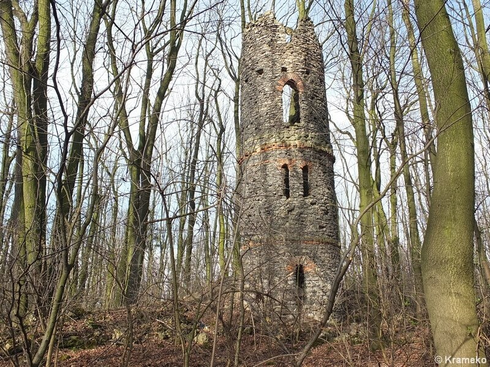
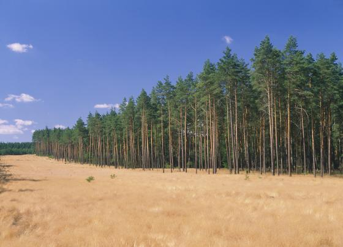

Witaj w Parku Leśnym
Park Leśny w Lublińcu jest jednym z najstarszych parków w Polsce. Został założony w 1934 roku i od tego czasu stanowi prawdziwą perłę miasta. Park rozciąga się na obszarze około 30 hektarów, oferując odwiedzającym wiele możliwości relaksu, rekreacji i kontaktu z naturą.
Park Leśny w Lublińcu słynie ze swojego bogatego drzewostanu, który składa się z różnorodnych gatunków drzew. Na terenie parku można znaleźć stuletnie dęby, buki, jesiony, świerki i wiele innych, tworzących malownicze aleje i cienie na spacerujących ścieżkach.
Jednym z najważniejszych punktów parku jest staw, który stanowi oazę spokoju i piękna. Staw jest domem dla wielu gatunków ptaków, które przyciągają pasjonatów ornitologii. Można tu również spotkać kaczki i łabędzie, które dodatkowo wzbogacają atmosferę tego miejsca.
Park Leśny w Lublińcu oferuje liczne atrakcje dla osób w różnym wieku. Dla dzieci przygotowano plac zabaw z huśtawkami, zjeżdżalniami i piaskownicą. Jest to idealne miejsce dla rodzin, które chcą spędzić czas na świeżym powietrzu w przyjaznym i bezpiecznym otoczeniu.
Dla osób aktywnych fizycznie park oferuje wiele możliwości. Można spacerować po malowniczych ścieżkach, biegać, jeździć na rowerze czy też korzystać z siłowni plenerowej. Park Leśny jest doskonałym miejscem do aktywnego wypoczynku i dbania o kondycję.
W parku znajduje się również mała kawiarnia, gdzie można odpocząć i delektować się aromatyczną kawą lub przekąską. To doskonałe miejsce na spotkanie ze znajomymi lub relaksującą przerwę po intensywnym spacerze.
Park Leśny w Lublińcu to idealne miejsce na wycieczki rodzinne, romantyczne spacery czy spotkania ze znajomymi. Przyjazna atmosfera, piękno przyrody i liczne atrakcje sprawiają, że park jest jednym z najbardziej popularnych miejsc w Lublińcu. Niezależnie od pory roku, zawsze można tu znaleźć spokój i odprężenie w otoczeniu zieleni i śpiewu ptaków.